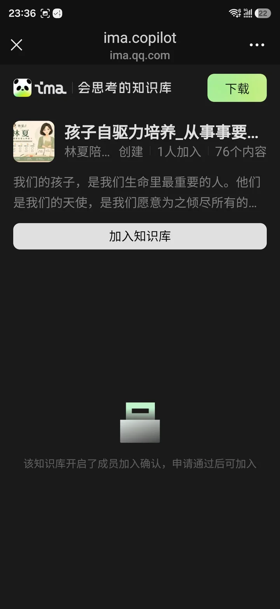
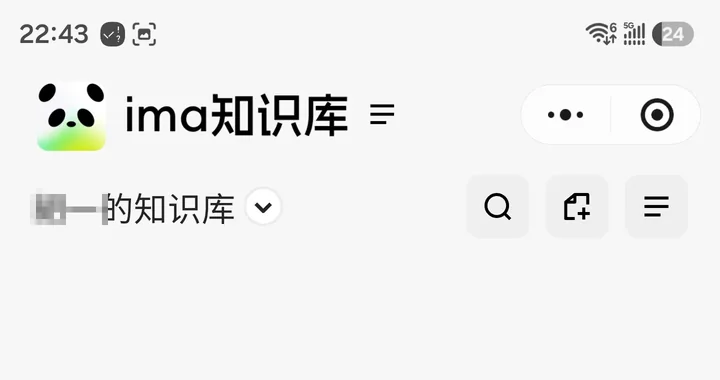
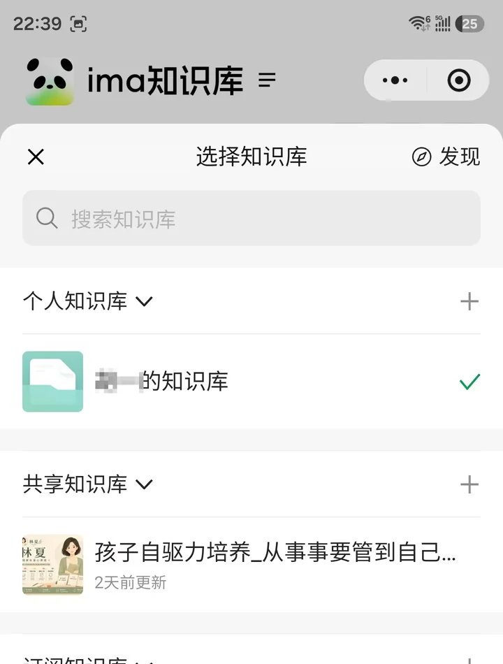
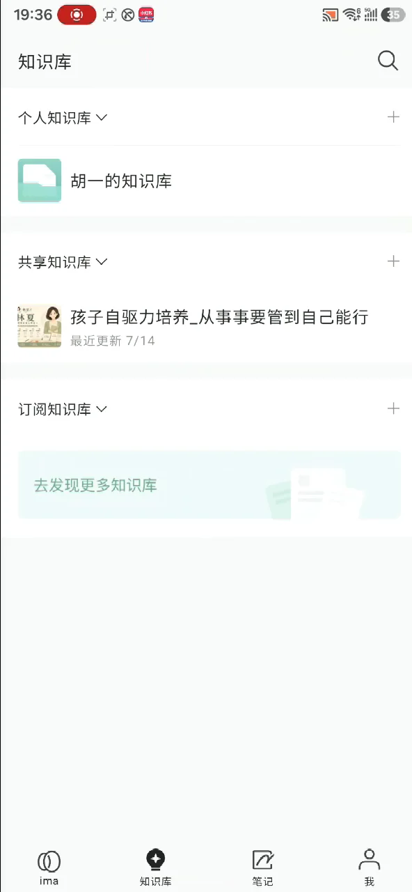

加入与使用
孩子自驱力培养
从事事要管到自己能行
第一次先申请加入；审核通过后，可随时从微信小程序或 ima App 进入
首次加入
首次申请加入
只需一次01打开申请页，点「加入知识库」
直接点按钮或微信扫码，都会进入下面这个申请页。右上角「下载」是安装 App 的入口；申请加入请点页面中间红框标出的「加入知识库」。

点这里申请加入
02提交申请，等待审核
点击后会提交成员申请。这时页面会显示：
"该知识库开启了成员加入确认，申请通过后可加入"
看到这句话是正常的，不是卡住或者出错了。我们会在2小时内审核通过。
03审核通过后，后续无需重复申请
通过后你已经是知识库成员，以后无需再次扫码或申请，直接按下面的小程序或 App 步骤进入。进入后可以查看阅读版、可打印工具、音频版，也可以在下方直接向 AI 提问。

审核通过后
微信小程序进入
01微信搜索栏输入"ima"
打开微信，下拉或点顶部搜索，输入"ima"，会出现小程序搜索结果，点红框标出的"ima知识库"。
点这里"ima知识库"
02先点顶部的知识库名称
进入小程序后，先点顶部当前知识库名称旁边的下拉箭头，打开知识库选择列表。

先点这里
03再选「共享知识库」里的本知识库
弹出"选择知识库"列表后，找到"共享知识库"分组，点红框标出的"孩子自驱力培养…"这一条。

再点这一条
04进入后直接查看全部内容
点击后直接查看全部内容，不需要再次申请或等待审核。
审核通过后
ima App进入
01打开手机上的ima App
在手机桌面找到ima知识库图标（黑白熊猫图案），点击打开。
02点底部「知识库」
App打开后，点底部导航栏红框标出的"知识库"这个tab。
点这里
03在"共享知识库"里点开本知识库
往下滑到"共享知识库"分组，点红框标出的"孩子自驱力培养…"卡片。点击后直接进入并查看内容，不需要再次申请或等待审核。

点这里
小提示：首次只需申请一次。审核通过后，小程序和 App 都能直接进入，不需要重复申请。有任何问题，欢迎在评论区或私信联系我们。